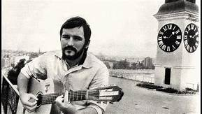

Đorđe Balašević
Najbolji kantautor na ovim prostorima
Ime mi je Đorđe Balašević. Prijatelji me uglavnom zovu Đole. Rođen sam 1953. (bik), u Novom Sadu, u gradu
kroz koji protiče Dunav. U Evropi, formalno… Išao sam u gimnaziju, ali nisam maturirao. Studirao sam
geografiju, ali nisam diplomirao. Vojnu obavezu sam regulisao, u celosti, nisam osuđivan, ni krivično
gonjen, i nisam bio član Saveza komunista. Nosilac sam najvećih društvenih priznanja, od kojih nemam ni
najmanje koristi. Snimio sam deset singl i devet LP-ploča. Pozlatile se, dao Bog…